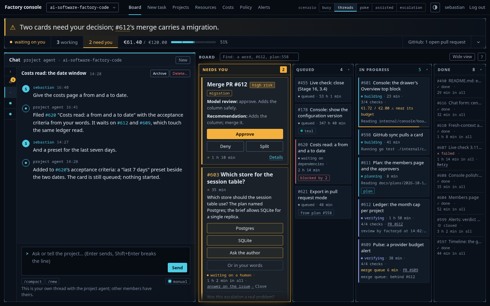
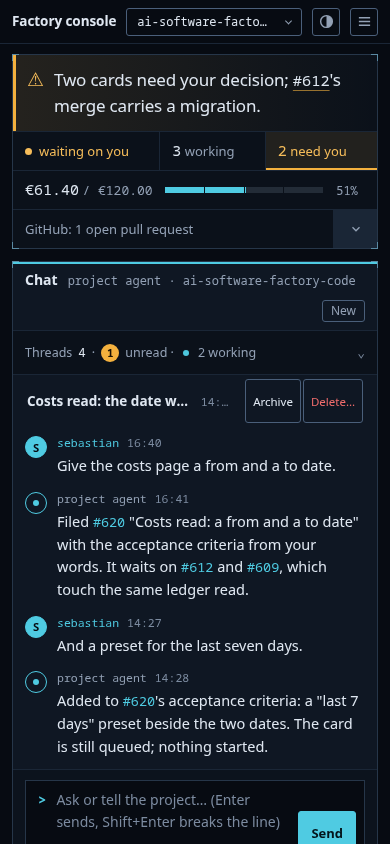
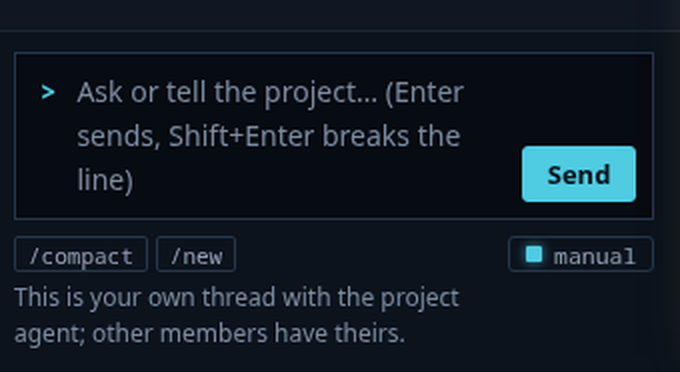
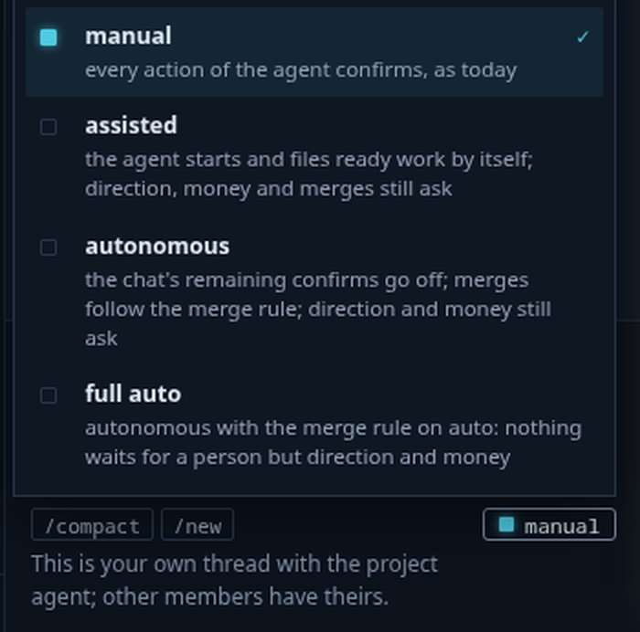
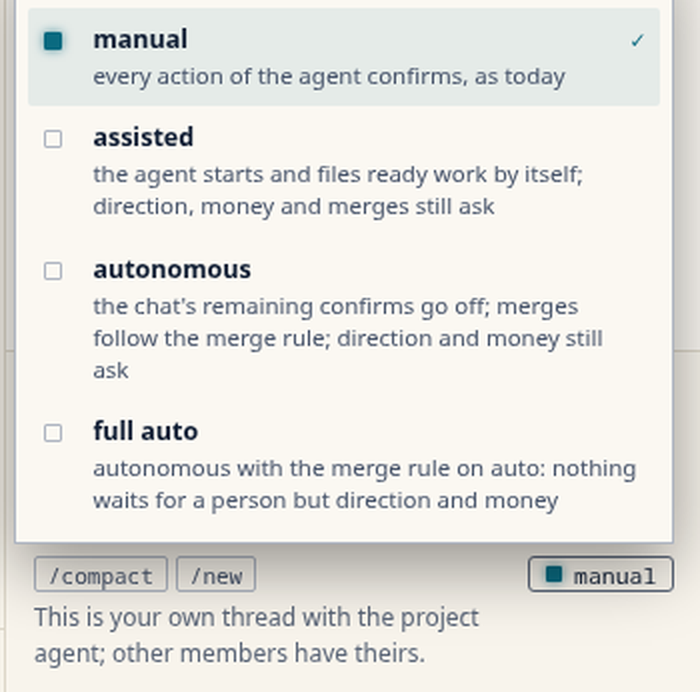
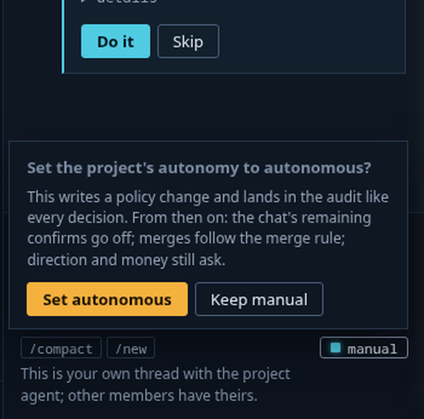
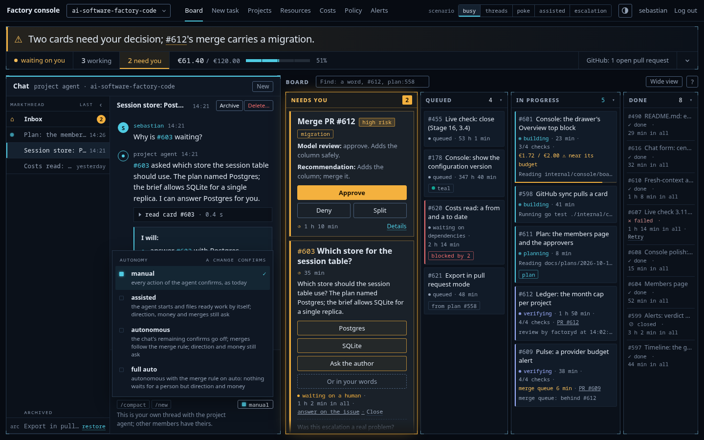
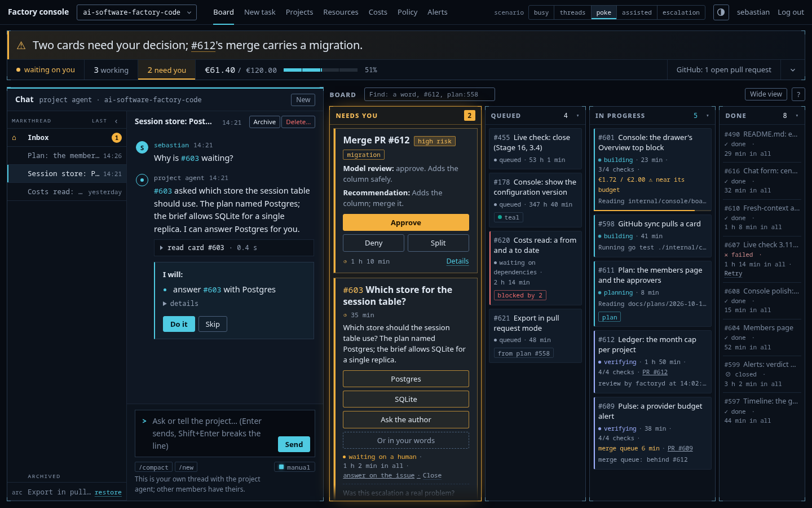
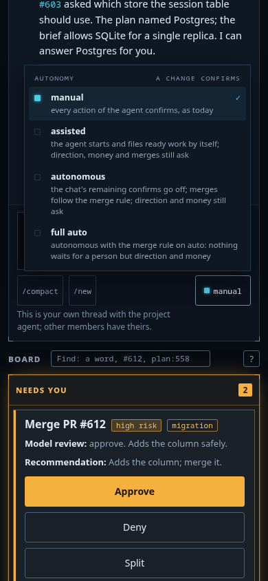
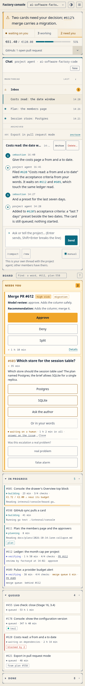

The UX round of the autonomy and multi-chat plan, roadmap 239, on the Mission control shell as the console has it on 2026-10-14. The brief names the eight things the round designs: the thread switcher, the unread badge, the working mark, the inbox thread, the escalation's face, archive and delete, the commands, the autonomy level selector. Eight directions as images, the critic's ranking, three variants as built prototypes with the five scenarios of the brief, shot in both themes at 1440 and on the phone at 390, checked and measured. The notes hold the run. Sebastian picked B, instrument, with the level control under Send: C14.
B, instrument: the mono table of threads at the chat's left, the thread's actions as text buttons on the open thread, "smaller dots look nicer". The level selector is none of the three placements the round drew. Sebastian asked for the Claude Code pattern: a small control under the Send button that names the current level, and opens on click a menu of the four levels, each with its name and a short explanation, the current one checked. Choosing another level turns the menu into the confirm, in place: the policy change and the audit named, Set and Keep. The button's top is flush with the /compact and /new chips. Built into all three prototypes, so every variant now differs in the switcher alone. The table folds: ‹ in its head folds it to a strip of the marks that keeps the open row's rule, the working dots and the unread counts in view, each mark still opening its thread; on the phone the fold leaves one summary row, "Threads 4 · 1 unread · 2 working".












open the pick in escalation in assisted in poke · every shot: busy poke light assisted light escalation dark the delete warning the palette the level menu light the level confirm the sheet
Eight directions in both themes from one prompt head (the fixed shell) and one content block (the threads), differing in where the switcher and the level selector live: a rail, tabs, a title that opens the list, a dock of chips above the composer, a command palette, a mono table with lamps in the strip, a messenger list, the inbox as its own region. Gemini 2.5 Pro ranked them (the prompt, the verdict): instrument 9, rail 8, tabs 6, inbox split 5, messenger 5, command 4, title menu 2, dock 2. The critic carried instrument, rail and messenger, and the director agreed: tabs and dock scroll sideways on the phone, title menu and command hide the other threads' state, inbox split spends a third of the chat's height on a thread that is quiet most of the day.


One chat engine in all three. The threads sort by last turn with the inbox pinned first, the archived last under a rule, dimmer, each with restore. The open thread is marked at the row's left edge. A thread with a turn in flight carries a breathing cyan dot; a thread with turns the member has not seen carries an amber count, and the browser tab reads "(n) Factory console". Opening a thread clears its badge; reading another thread never clears the inbox's. The inbox is the factory's thread, named "Inbox" with a house mark; a poke arrives in it as a turn by "the factory", one per state change, with choices as buttons where a decision fits, and with its decider line ("assisted level · started by the agent") when the agent acted on its own. An escalation is a poke marked "needs you" with an amber rule; its choices sit in an answer row beside the text box, once, with "or in your words below". Archive hides and keeps. Delete asks: the warning names the thread, its message count, that the rows go for good, and that one event names the member, the thread and the count. "/" at the start of the text box opens a palette with /compact and /new; both also sit as chips under the box. The level control sits under Send (C14, above). Every text pair at 4.5:1 or better in both themes, measured.
One-line rows in a rail at the chat's left: the mark, the title, the time. The thread's Archive and Delete behind a ⋯ on the open thread. The quietest list of the three. As drawn, the level sat as a segmented control in the chat's head; the built variant carries C14's control instead.


open the variant in escalation · shots: busy poke poke light assisted light escalation dark the thread menu the delete warning the palette the level menu the phone the sheet
A mono table at the chat's left with the columns mark, thread, last; the archived rows marked "arc". New in the chat's head; Archive and Delete… as text buttons on the open thread. The most Mission control of the three. As drawn, the level sat as four lamps in the instrument strip; the built variant carries C14's control.


open the variant · the shots are under the pick above
Two-line rows at the chat's left: a round mark (the house for the inbox, the initial otherwise, the breathing dot while a turn runs), the title, the newest line in the faint colour, the time; the archived folded under "Archived (1)". The newest line says what happened in a thread without opening it. As drawn, the level sat as a select in the top bar; the built variant carries C14's control.


open the variant in escalation · shots: busy poke light assisted light escalation dark escalation light the thread menu the delete warning the palette the level menu the phone the sheet
One column, the chat first, the list as one vertical list above the open thread's log, every row, choice and menu item at 44 px, no horizontal scroll. The level control sits under Send as on the desk; its menu is as wide as the screen allows.


Gemini 2.5 Pro read each variant's sheet alone, before the level control changed (the prompt: rail, instrument, messenger), then compared the three (the prompt, the verdict). The scores alone, 10 best:
| Variant | switcher | badge | working | inbox | escalation | archive, delete | commands | level | craft | hierarchy | compared |
|---|---|---|---|---|---|---|---|---|---|---|---|
| A, rail | 9 | 10 | 10 | 10 | 9 | 9 | 10 | 10 | 7 | 10 | 5 |
| B, instrument | 9 | 10 | 10 | 10 | 9 | 9 | 10 | 10 | 6 | 9 | 6 |
| C, messenger | 9 | 10 | 10 | 10 | 10 | 10 | 9 | 10 | 8 | 10 | 9 |
Compared, the critic picked messenger for "the most context at a glance through its two-line rows" and ranked instrument second for the idiom, naming the table's phone risk, which the built phone shot answers. The director recommended messenger's rows with instrument's lamps. Sebastian picked instrument for its smaller marks, and set the level's place himself. On the level's placement the critic was of two minds across the round, the strip over the directions and the top bar compared, and rejected the chat's head both times; the composer's foot was in no image. The craft notes of the single critiques, taken: the thread head's title ends in an ellipsis, the rows gained 2 px, the answer buttons wrap.
Every text pair this round adds, on the rendered pages in eight states, dark and light, from contrast.js, the full list in contrast.tsv. The lowest is a row's time and a newest line, faint on the panel, at 4.7 dark and 4.9 light.
| Text pair | dark | light |
|---|---|---|
| a row title, muted on the panel | 5.5 | 5.2 |
| the open row's title | 13.0 | 14.2 |
| an unread row's title | 15.2 | 15.2 |
| a row's time, faint | 4.7 | 4.9 |
| the badge, ink on amber | 9.9 | 8.2 |
| the archived label and an archived title | 5.5 | 5.2 |
| restore, cyan | 9.9 | 5.6 |
| the thread head's title | 10.6 | 6.2 |
| the thread hint and a decider line, faint mono | 5.2 | 5.5 |
| "the factory", "needs you", "Answer:", amber | 9.8 | 6.0 |
| "or in your words", faint | 4.8 | 5.3 |
| a command chip | 7.1 | 7.1 |
| a palette name, cyan | 8.5 | 5.2 |
| a palette word, the warning's text | 6.9 | 7.3 |
| a choice button | 12.1 | 16.6 |
| the level button, muted mono on the composer | 7.1 | 7.1 |
| a level's name in the menu | 12.3 | 14.0 |
| a level's words, muted | 5.8 | 6.5 |
| the menu's head, faint | 5.2 | 5.5 |
| the confirm's text | 6.9 | 7.3 |
| the newest line, faint | 4.7 | 4.9 |
| "a turn in flight", cyan | 9.9 | 5.6 |
node check.js reads every variant: the words, the level control listing the four levels with their words, the badge on the row and in the tab title and its clearing, the inbox pinned first, a poke's choice answering, archive and restore, the delete warning's words and its keep and delete, the "/" palette, /compact leaving a summary and the last two turns, /new and the first message naming the thread, the level confirm's words, keep and set and the poke it leaves, Escape on the menu, the confirm and the palette, Ctrl+k, the order by last turn and the working marks, the poke's badge, the deciders, the escalation's answer row and its answer, the fold (the width, the titles gone, the badge and the dot in view, a mark opening its thread, the phone's summary row with its counts), no horizontal scroll at 390, 44 px targets on the phone, every text pair at 4.5:1 in both themes in eight states. ok: the eight things work in the three variants, every pair reads, the phone is one column.
16 images at $0.15 and 5 critiques at $0.03: $2.55 of the round's $15.